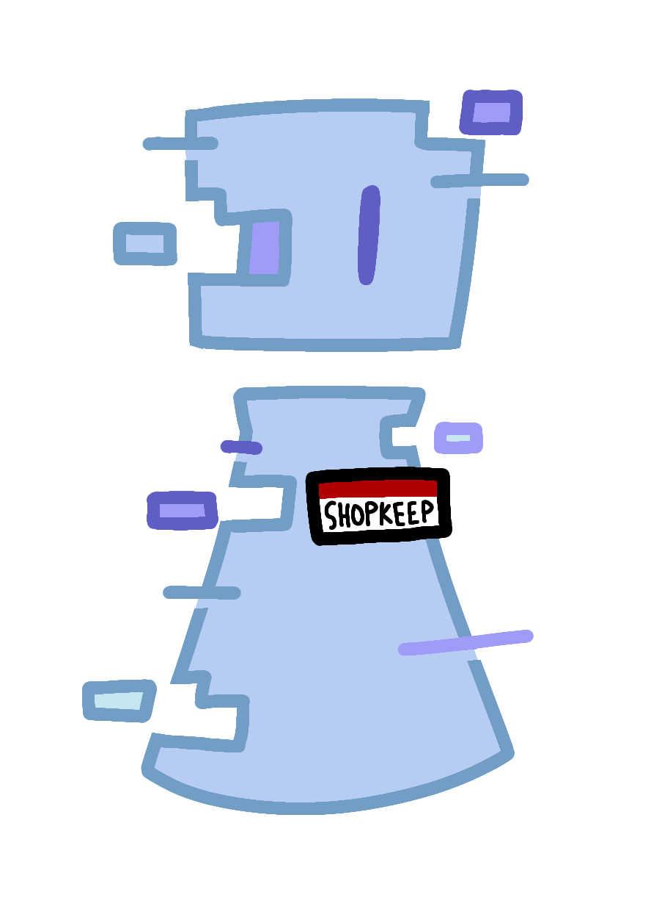
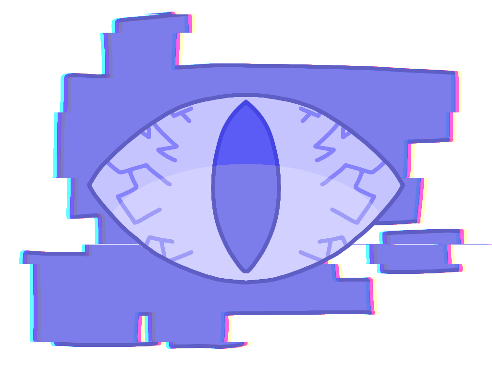
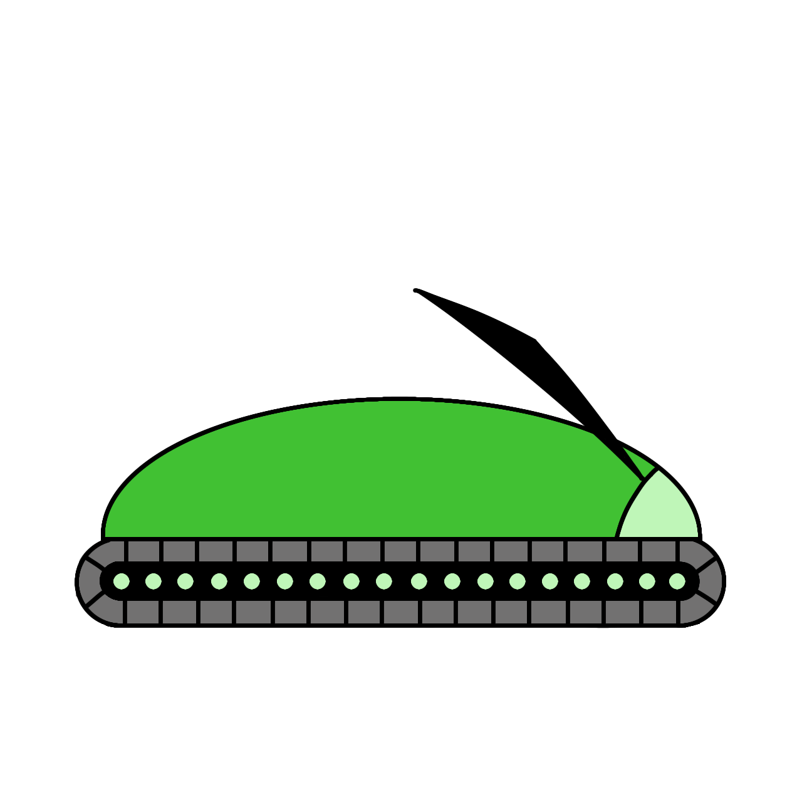
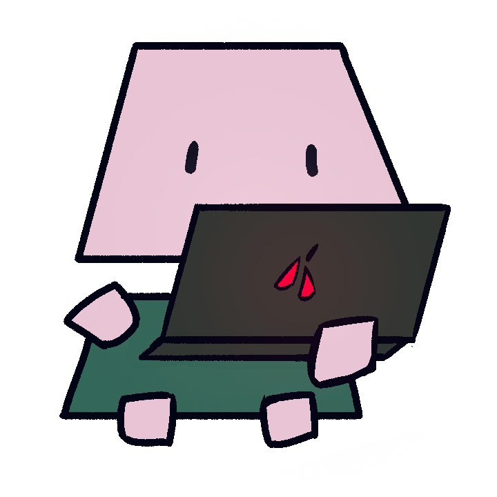
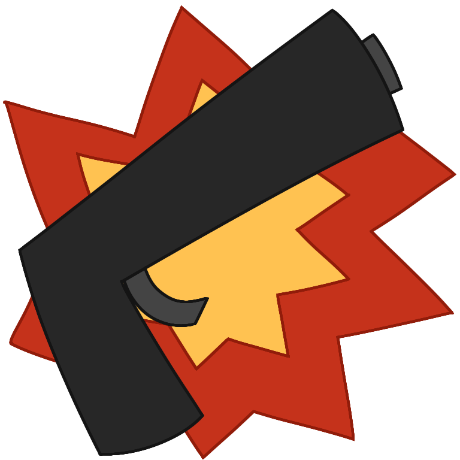
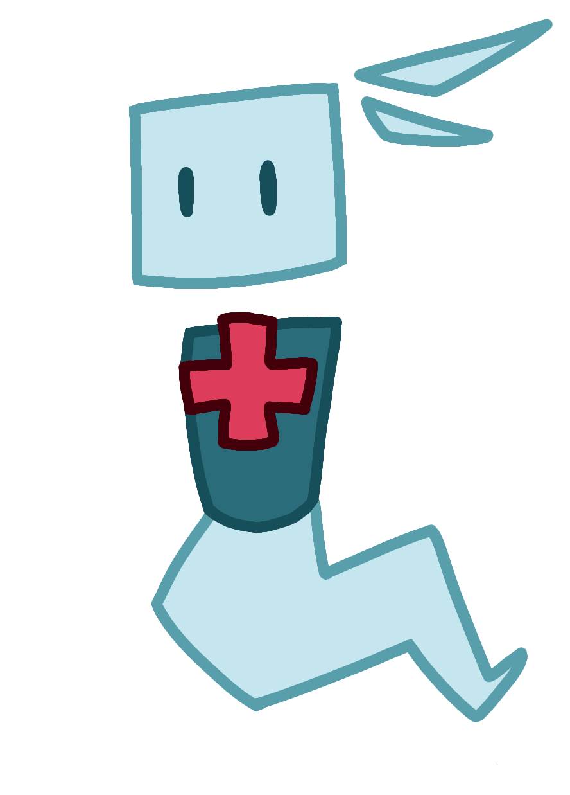

Game Title
Concepts and Development
Story
A computer virus intended to simply make its creator money that has now gone rogue. It lurks in the background on computers all around the world, silently stealing people’s data with the hopes of eventually using it to obtain total control over them.
It's now up to a free, cheaply made antivirus to prevent a worldwide AI takeover.
Gameplay
Some of the gameplay features:
- The Overseer: The parent software of the player character: a mentor and a guide for the player early on.

- The Shopkeeper: A software similar to the player, who’s been corrupted to the point of being unrecognizable. They now accept corrupted data as a currency, selling that data to mysterious third parties in exchange for useful items.

- Corruption: The natural deterioration of software and its code accelerated into being incomprehensible jumbles of numbers and letters that is accepted as a currency by the shopkeeper.

- Corruption Wells: Computers so overrun by corruption that they've become solely reliant on it, absorbing it directly from the player to utilize it as raw energy.

The Enemies
- The Virus - A computer virus intended to simply make its creator money that has now gone rogue. It lurks in the background on computers all around the world, silently stealing people’s data with the hopes of eventually using it to obtain total control over them.

- Bug: A bug in a line of code that’s been so intensely corrupted that it manifested into an actual, mechanized cockroach.

- Laptop Goon: The collective inability of the general public to use computers manifested as a physical being similarly to bugs. Tries (and usually fails) to click on the player character despite being completely unsure of what the player actually is.

- EY: A trojan malware disguising itself as an antivirus of its own. In reality, these wandering tanks of software hunt down all data and software that is yet to be corrupted, taking them down with only a few blasts of its laser eye.

- Hackerman: The online avatars of the greatest hackers around the world. These ghostly strings of code have a knack for taking down security and antiviruses alike. They whip around extremely quickly, firing a continuous stream of attacks at anything in their way.

The Items
- Overload: Deal more damage, but fire with lower accuracy.

- Faulty Heatsink: Causes your bullets to explode on impact.

- Reverse Gun: Causes your bullets to ricochet off walls and enemies, damaging you if they hit you.

- Sniper Scope: Deal more damage when firing from farther away, but deal less damage when close to your targets.

- Dice gun: The clip size of your weapon changes randomly every time you reload.

- Supersonic bullets: These bullets fly much faster than others, and they can even pierce enemies.
.png)
- Glass cannon - Double your dealt damage, but reduce your max health by 50%.

Art
The main characters of our game:

The Player: Originally, cheaply made, free antivirus. Now, the world’s only hope in preventing a worldwide AI takeover.

The Megaserver: The largest of many gargantuan server hubs stationed around the world built to host the great, mysterious virus that plots to take command over all of humanity. The biggest obstacle blocking the player’s journey.
Development
Here's our timeline of development:
- Pre-production: Concept art, storyboarding, and brainstorming (1 months)
- Production: Development of game mechanics, story, art, and sound (5 months)
- Post-production: Testing, bug fixing, and polishing (1 week)